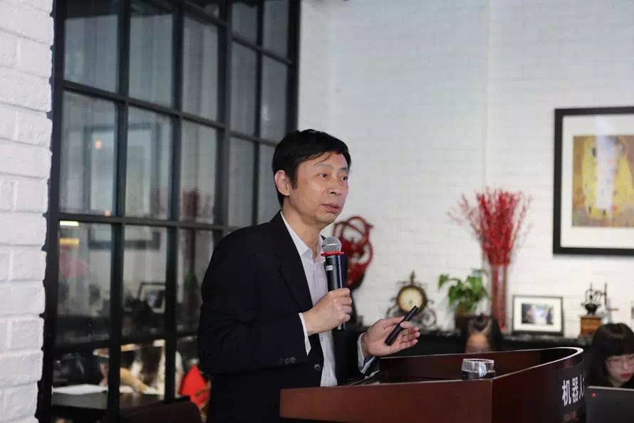
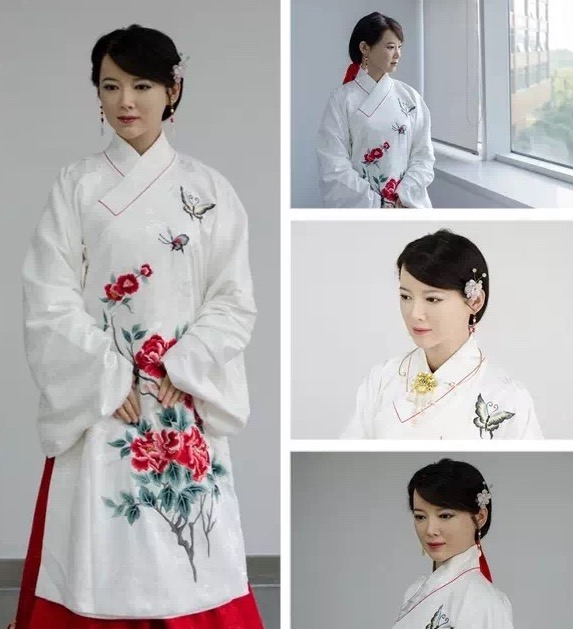
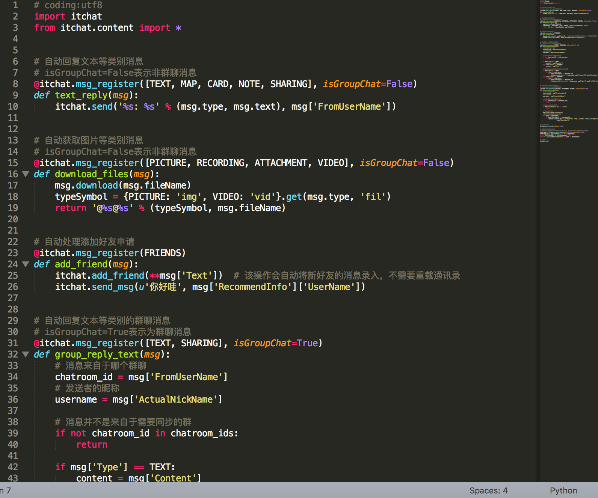
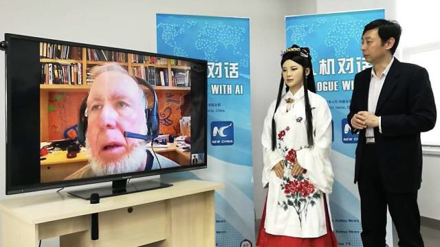
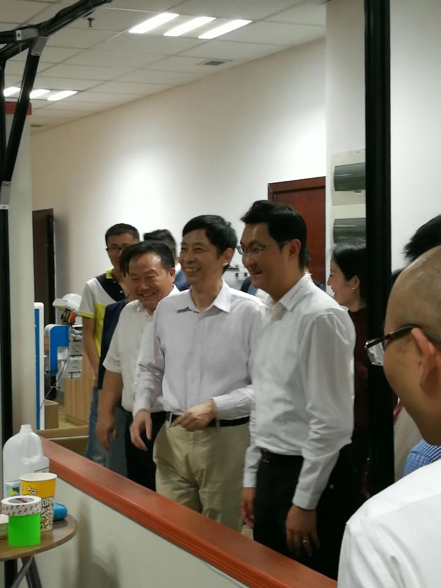

Improving Humanoid Robot Jia Jia
Mentor: Xiaoping Chen

Professor in School of Computer Science and Technology at University of Science and Technology of China (USTC)
WHAT DID I DO:
- Enhancing the robot’s Chinese Conversation System to improve its performance of communicating with human beings.

Pictures of Jia Jia
In order to make Jia Jia speak Chinese fluently and have a good performance when communicating with human beings, we need to do a lot of things like designing the conversation structure, figuring out how to do the dialogue management work, applying your model to real robot enviroment like ROS and also the tedious work of testing the robot and changing your code repeatedly.
While doing these things with other group members, I have really learned a lot of theories and methods behind making a robot act like a well-spoken person.
I am really happy that I can contribute to the achievements of Jia Jia.
- Applied machine learning algorithms to the Question Classification Model of Jia Jia.

Question Classification Model is quite an important part of Jia Jia. A chat robot need to grasp the speaker's intention and decide to change this intention to real action sometimes merely from his short question.
I mainly work with the people in the NLP subgroup inside the Jia Jia group. With the help of them, I did a lot of research in the field of text classification and applied these algorithms to the Question Classification Model of Jia Jia. From Naive Bayes to SVM, then to deep learning model like CNN and RNN, I found the most suitable and practical method and used it to enhance the classification model.
One short blog written by me about this
- Doing some tasks like building a WeChat version of Jia Jia, labeling data, etc.

Sometimes, I did some simple tasks in the whole Jia Jia group like building a WeChat version of Jia Jia, labeling data, etc.
For instance, our wechat chatbot version of Jia Jia is mainly based on the original conversation system interface of Jia jia and the changed version of the code showed in the picture above.
Learning new things always seems exciting for me.
SOME EVENTS ABOUT JIA JIA:
-
Jia Jia meeting the former British Prime Minister Cameron
-

Jia Jia meeting the well-known futurist Kevin Kelly
-

Jia Jia meeting Pony Ma, CEO of Tencent